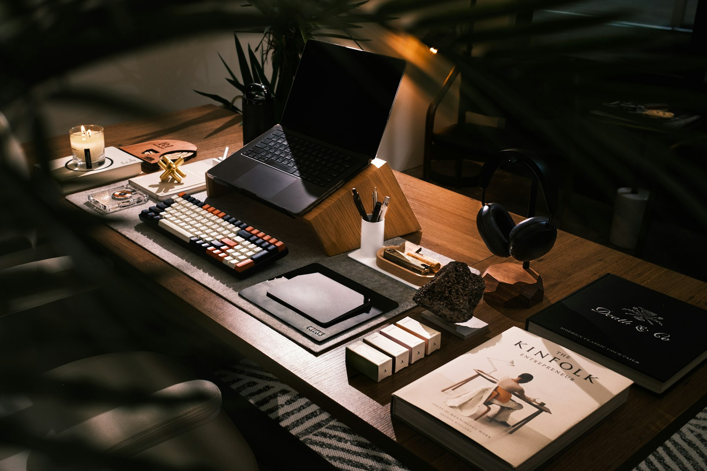
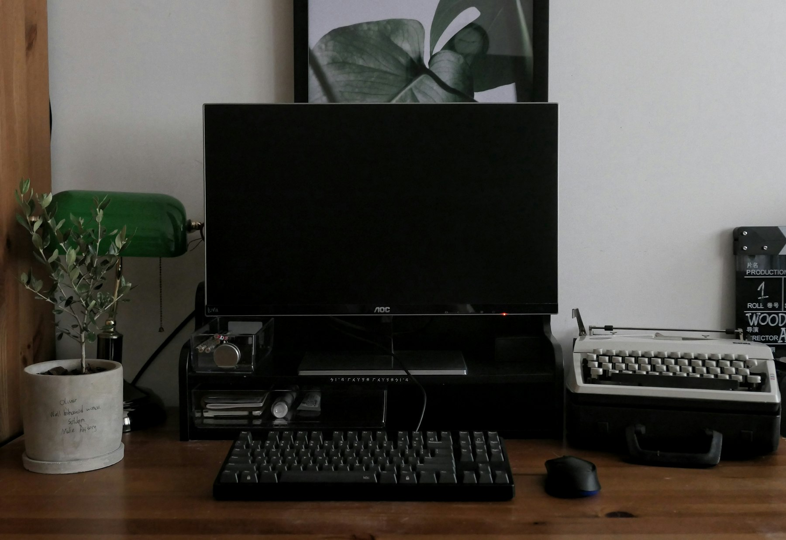
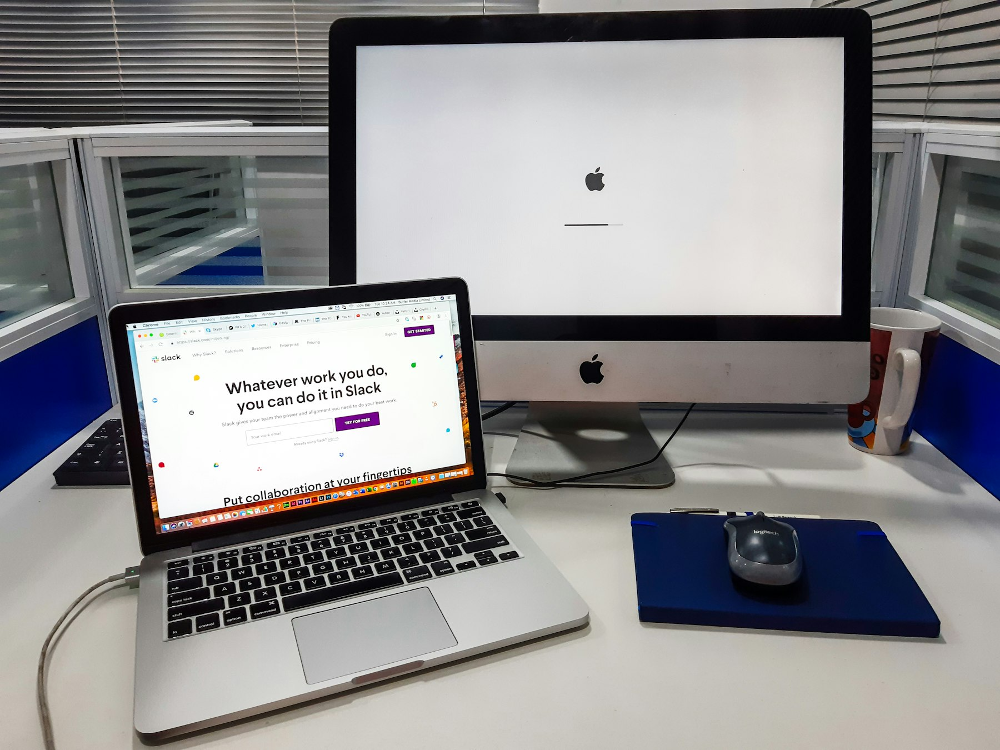
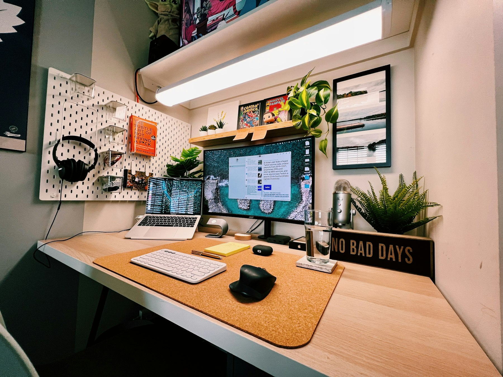
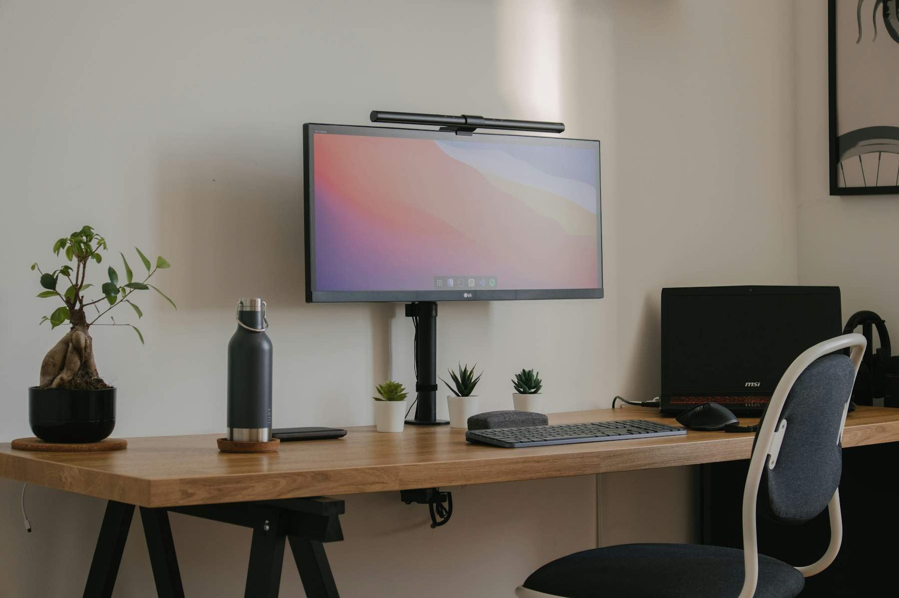

TL;DR
Creating an efficient workspace is crucial for freelancers.
By organizing your desk, using ergonomic tools, and integrating technology, you can improve focus and productivity.
Personalizing your workspace also plays a significant role in your overall motivation.

The Importance of a Well-Organized Workspace
A clean and well-organized workspace can significantly increase your productivity as a freelancer.
Numerous studies show that clutter can negatively affect your focus and stress levels.
So, start by decluttering your desk.
Remove items that don’t serve a purpose and only keep essentials within reach.
Consider using organizers and storage boxes to manage smaller items.
A well-organized desk not only looks professional but also makes it easier to find what you need quickly, leading to a more efficient working environment.
Take a moment to assess your current workspace.
Ask yourself: What am I missing?
Which items could I repurpose or remove?
Creating a functional workspace tailored to your needs is the first step to unlocking higher productivity.
Essential Tools for Task Management
Using task management tools is crucial for freelancers who juggle multiple projects.
Digital planners or apps can streamline your to-do lists and deadlines.
Tools like Trello or Todoist help visualize tasks and prioritize them efficiently.
Start by breaking down your projects into smaller tasks and assigning deadlines to each.
Integrate these tools into your daily routine.
Set aside time each morning to review your tasks and plan your day accordingly.
Consider color-coding your tasks based on priority or project type.
This visual aspect makes it easier to see what needs immediate attention and keeps your workflow organized.

Selecting the Right Ergonomic Accessories
Ergonomics play a significant role in your productivity.
Investing in ergonomic desk accessories helps prevent fatigue and discomfort during long work sessions.
Start with an adjustable chair that supports your back and promotes good posture.
Additionally, consider using an ergonomic keyboard and mouse to reduce strain on your hands and wrists.
When choosing ergonomic tools, assess your current setup.
How does your chair feel after a few hours?
Is your monitor at eye level?
Adjust what you can, and make a list of any accessories you might need.
The goal is to create a workspace that not only boosts your productivity but also protects your health.

Incorporating Technology for Efficiency
Technology can streamline many aspects of your freelance operations.
Using smart devices such as digital assistants can help manage schedules, set reminders, and even control your workspace lighting.
Additionally, consider adding a second monitor if possible; it allows you to multitask more efficiently, especially when researching while writing or managing emails.
Create a tech setup that works for you.
Explore productivity apps that sync across devices, ensuring you can work seamlessly whether you’re at home or on the go.
For instance, using cloud storage keeps your files accessible and secure, saving you time and stress in the long run.

Optimize Your Desk Layout
The layout of your desk matters just as much as the items on it.
Ensure that your most used items are within arm's reach.
This includes your computer, writing materials, and any notes or resources specific to your current projects.
Use vertical space for storage by adding shelves or clipboards.
This keeps your workspace tidy and maximizes efficiency.
Start by sketching out a layout that works for your workflow.
Consider different arrangements and see what feels most natural.
Test various setups for a week and adjust as needed to find what allows you to work best.

Create a Customized Comfort Zone
Your workspace should reflect your personality and preferences to keep you motivated.
Adding personal touches like plants, artwork, or comfortable lighting can make your work environment more pleasant.
Studies suggest that a cozy, personalized workspace can enhance creativity and overall job satisfaction.
Start by including items that inspire you or bring joy.
Consider rotating these items periodically to keep your workspace fresh.
Regularly changing your environment can stimulate creativity and prevent boredom—both crucial for a freelancer's success.
Staying Focused with Minimal Distractions
Distractions can derail your productivity, especially when working from home.
To combat this, use headphones to create a focused atmosphere.
Whether it's music, white noise, or complete silence, find what works for you to block out external noise.
Additionally, set specific work hours to establish a routine, signaling to others that you are unavailable during these times.
Investigate apps that help you stay on track with timed work sessions, like the Pomodoro Technique.
This method encourages you to work in short bursts with breaks in between, balancing focus and rest to maintain high productivity levels.
FAQ
What are the best desk accessories for productivity?
Some of the best desk accessories include ergonomic chairs, task management tools, storage organizers, and noise-canceling headphones.
How can I improve my workspace for better focus?
Decluttering, organizing your items, using ergonomic tools, and personalizing your space can significantly enhance your focus.
Is technology important in a freelance workspace?
Yes, using smart devices and productivity apps can streamline your tasks, improve efficiency, and keep you organized.
How do I choose ergonomic accessories?
Select items that support good posture and reduce strain. Make sure to try them out and adjust according to your comfort needs.
What should I do about distractions while working?
To minimize distractions, create a defined workspace, use headphones, and set specific work hours to signal your availability.
Photo credits
- Photo 1: LOGAN WEAVER | @LGNWVR on Unsplash (https://unsplash.com/@lgnwvr) (https://unsplash.com/photos/a-modern-desk-setup-with-laptop-and-books-xjyHDnA93Pk)
- Photo 2: NORTHFOLK on Unsplash (https://unsplash.com/@northfolk) (https://unsplash.com/photos/tape-dispenser-near-book-RR6LG44RCgc)
- Photo 3: Hugo GF on Unsplash (https://unsplash.com/@gfhugo) (https://unsplash.com/photos/flat-screen-computer-monitor-turned-off-YZ8tT2Nn4is)
- Photo 4: Muhammed A. Mustapha on Unsplash (https://unsplash.com/@flairman) (https://unsplash.com/photos/silver-imac-near-space-gray-macbook-pro-To_egtJSLIE)
- Photo 5: Ryland Dean on Unsplash (https://unsplash.com/@ryland_dean) (https://unsplash.com/photos/a-desk-with-a-laptop-and-a-monitor-on-it-XrLZODgt81M)
- Photo 6: Nubelson Fernandes on Unsplash (https://unsplash.com/@nublson) (https://unsplash.com/photos/black-flat-screen-tv-turned-on-near-black-computer-keyboard-on-brown-wooden-table-NZ-TIy_Q-GM)
- Photo 7: Windows on Unsplash (https://unsplash.com/@windows) (https://unsplash.com/photos/a-person-sitting-at-a-desk-with-a-laptop-and-papers-241bwQl2uWE)